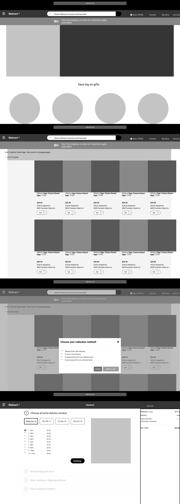
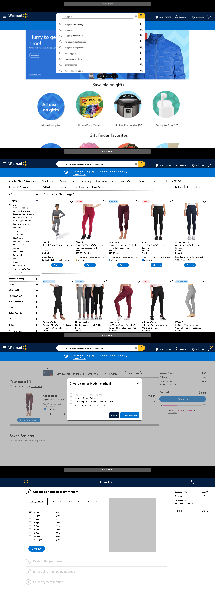

e-commerce redesign – Dec 2020
Walmart 
Simplified CTAs, central cart location, and clarified item-collection methods reduced overall site confusion.
Table of Contents
-
map1. The Mission
-
fingerprint2. Key Artifacts
-
gesture3. Usability
-
face4. Seeing Our User
-
casino5. The Strategy
-
compare6. Fidelity Comparisons
-
beenhere7. Outcome

The Mission
Our main mission was the improvement of core user flows. In this case, efforts were aimed at Walmart's e-commerce platform. Specifically, the team focused on how users signed-in, added items to their cart, and checked out. The question from here became: Whom exactly was the user we should be targeting for flows as such? What pains, if any, were they experiencing? How might we improve the confulence of these flows overall and, thus, improve the user experience?
On the one hand, we began performing usability testing to examine the interaction of users with the product and core flows in question. On the other, we began researching to gain general understanding of the business and its users.
At first, the scale felt huge. We were working on the scale of Walmart, after all. The users that frequent the site vary – to say the least. We needed to choose the right target user lest user impact fall flat. Moreover, we wanted to aim for a user that would best scale with Walmart's vision regarding the vision for platform growth.
What I Did
Compiled and analyzed secondary research, performed competitor task flows, developed UX Hypothesis and problem statement, led design efforts using Figma, and supported Front-end Development
-
pie_chartThe Team
Doug Cassidy – Project Manager & UX Researcher
Katelyn Deibert – UX & Visual Designer
Madison Smith – UX Design Lead & Front-end Developer
Nicole Peebles – UX Researcher & Designer
Theresa Morgan – Front-end Lead & UX Designer
What we made.
The Problem
Contemporary parents need a singular, quality, and straightforward method of purchasing their food, apparel, and everyday essentials digitally because it is difficult to spend quality and quantity time with family when that time is being spent trying to figure out how to do simple things such as add an item to an online cart or how it will be delivered and from where.
UX Hypothesis
The lifecycle of a shopper of Walmrt's online store begins with a need for a product, then finding that product – adding items to their cart until they are ready to finalize that cart and checkout.
Users of Walmart's online shopping experience cannot complete this lifecycle due to confusion over "delivery/pickup" site versus "Walmart.com." Thus, users are leaving Walmart's e-commerce platform; removing items or all together abandoning their carts.
They were losing shoppers. They were losing money.
Secondary Research
Former head of Walmart's e-commerce platform, Marc Lore, had joined Walmart in 2016. He convinced Walmart’s board to shift its product area focus from books, electronics, and toys to apparel, food, and everyday essentials. Lore wanted Walmart to become a more universal marketplace. Moreover, under his lead, UI was improved, free deliveries for orders over $35 began being offered, and the ability to save money through the BOPIS (buy online pickup in store) initiative.
Why did this matter to us? Because all of these efforts were targeting millennials due to their combined spending of $600 billion/ year and their making 54% of purchases online. Nielson Norman discussed how there has been a significant change in consumer behavior brought about by the pandemic. They describe this shift in consumer behavior as the "omnishopper" and it would be sustained by Gen Z as they continue to enter the workforce. Lastly, Gen Z statistically shares many of the same views, values, and habits as millennials.
All this in mind, I made the call to focus our efforts with this research as our impetus. We would target the millennial omnishopper. I also decided that the three items on which we would focus would be the same three that Marc Lore had convinced the board to adopt as their new product area focus.
With a target user, we could begin conducting usability testing.
Sorted notes from desktop usability. We found the most pains to be with desktop. Desktop was a refelction of mobile.
Notes from mobile usability testing. The mobile version was a little easier for users to navigate in some regards, but for the flows we were examining, confusion was still being experienced.
Seven 1-on-1 interviews helped us learn, in general, about how our target user shops online.
In order to identify where improvements were needed, we conducted usability testing of Walmart's current platform.
Their current e-commerce platform was confusing to shoppers. This was particularly surprising considering the site had been recently redesigned as of March 2020.
Seven usability tests indicated that the redesigned Walmart site still felt like two separate sites since the user had to switch between two pages. Something Walmart had tried correcting with the March redesign.
The two pages also did not look the same in design or layout and have different UI and functionality causing further confusion.
"Before" here shows how the duality of the site is at the top of everything else; showcasing the split. This split was confusing. "After" shows our solution.
On the left, "Before," the top image shows the cart for "everything else" and, below, the cart for groceries. On the "After" side, we see our team's cart solution to simply unify and centralize these divorced carts.
What we found
The user had to navigate two carts defeating the goal of a singular experience. Additionally, item-collection methods were not clear to shoppers while they built their cart.
Users found these two different sites and carts confusing and it took them an average of 6.5 minutes to navigate between the two. Over half couldn’t figure out how to edit delivery options.
We were beginning to see the frustrations. We were beginning to understand the needs. Also of importance, we were beginning to see a lot of potential sales being lost to online shoppers abandoning their carts because it took too long just to figure out how to add a single item to their cart.
Seeing Our User
As all these needs and pains became evident, we needed to better visualize who was being affected: "Sarah Cooper." Sarah represents a large customer segment. Someone who manages a home, and whose busy lifestyle is prompting her to increase her purchases online out of convenience and necessity.
Sarah is a 36-year old wife and mother of two. While her husband must leave home for work, she is working from home now due to the pandemic and has the added responsibility of managing her kid’s virtual schooling and continuing to run their house. She is stretched thin with little opportunity to be out and about doing errands, and is searching for an alternative.
Online shopping is supposed to be a breeze and for Sarah using Walmart’s site it was not. All e-commerce platforms are vying for the same customer segments, and it is the intuitive platform that will succeed. At this stage, Walmart’s main competitor is Amazon. If they had any hope of competing, it needed to become easier for Sarah to sign in, add several items to her cart, and checkout.
For people like Sarah, they are just hoping for something singular and straightforward to use. Their initial experience of an e-commerce site will greatly impact which platforms they choose to frequent and give their money to.
I helped to develop a three-step design strategy to meet deadlines and achieve Walmart’s goal of site singularity so as to ensure Sarah would no longer be wasting time.
First, we needed to centralize the two carts. Having two carts to navigate and toggle between doesn’t make sense for Sarah and in our testing led to 50% cart abandonment alone from confusion.
Next, Sarah needed to know what items were available, from where, and what collection methods were applicable. What good is it to add toilet paper for pickup only to later find out your preferred store is out of stock? And seeing all available collection methods – increased system visibility – would make clear exactly how she would be receiving each item in her cart.
The last step would be giving the ability to edit during checkout. Previously this was something that could not easily be done. Sarah needed to be able to quickly edit her cart during checkout to make sure her order is exactly what her family needed.
Along with the three-step strategy, milestones and deadlines were tracked. A Kanban Board was used to delegate weekly tasks.
System Visibilty Sketching
Now we needed to begin visualizing what solutions could look like that would also match Walmart’s current branding and style guide. Each member sketched proposed solutions to each of our three strategies.
What were we really conveying, though? Sketches needed to increase system visibility for Sarah. This was especially important for what we referred to as collection methods. Between all the options available to the omnishopper, it needed to be more clear what methods were available. Of the methods offered by Walmart, a user needed to know exactly which of the bunch were available for a given product – every time.
The solution for increased system visibility was originally situated in the core flow in which a user is adding items to their cart. It proved to be useful for other aspects of our three core flows. For example, when editing a previously selected collection method from your cart, this same modal was still applicable. This took a lot of stress off our timeline in terms of development.
This sketch represents my solution for displaying all available collection methods.
The "get modal" – as we came to call it – would trigger each time a shopper selected the "Get" button which is equivalent to "Add to cart." It proved to be a flexible structure for our solutions and could be used in different ways across flows.
Here we see the low-fi solution for better displaying system visibility. If that item is not eligible for a particular method, the method would simply default to an inactive state – the user never has to wonder if a particular item was or was not able to be collected a certain way.
Designing for Development
As hinted at prior to now, we would need to actually code our solutions using Bootstrap framework. Thus, it was important, even while just sketching, that we were familiar with the parameters presented by Bootstrap; we had to make sure that we could actually code the solutions we proposed.
Low-fi
Mid-fi
High-fi (Final)

Eliminating Questions
We were delighted to find that, with our redesign, users now navigated two tabs without issue; one for proper display of local store options and the other which would encompass the full inventory of what Walmart has to offer. All the while, the same UI would be used, the same modals, and the same location for carts and checkout; effectively mitigating confusion which was previously leading to cart abandonment.
Steve Krug, says that the job of good design is to get rid of the question marks. When search became unified, it just made sense; when you had one location to which all items went, it just made sense; when users had the control to choose their collection method from the entire list of available methods for a particular item, it just made sense.
This is the kind of impact that Sarah needed. Something that just worked. We saw total usability success go from 60% to 84%. Again, here, we are correlating success with not getting frustrated while moving through the three core flows. Basically, no confusion equated to no abandonment considering other more common abandonment reasons (such as limited payment options) were not observed as being an issue for Walmart.
Outcome
If Walmart implemented our design solutions the impact would be significant. The results of our testing and prototyping have shown that if users could easily build their cart they would be less likely to abandon that cart. Therefore, Walmart stands to decrease the amount of users abandoning their carts. This alone would significantly impact Walmart’s bottom line. Walmart could gain an additional 35% profit; a possible windfall of $8.5 billion.
For future iterations and next steps, we would weigh the actual cost of redesign implementation, test new solutions with users lost to poor UX, and finally, we see a lot of opportunity on the logistical side of things. Understanding the real impact on employees and their workflow is just as critical to Walmart’s overall success as Sarah’s now improved experience.
On a personal note, this project helped me to understand the timing, coordination, and pragmatism needed when implementing solutions on this scale – being able to work both the design and development side of a problem from start to finish in just 3 weeks emphasized the need for strong communication and understanding between and of every role that touches or will touch a given project.